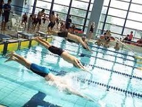

La natación es una actividad física completa que implica el uso de todos los músculos del cuerpo. Es un ejercicio cardiovascular excelente que ayuda a mejorar la salud cardiovascular, la fuerza muscular, la resistencia y la flexibilidad. También es una actividad de bajo impacto que es segura para personas de todas las edades y niveles de condición física.
La natación se puede practicar en una variedad de entornos, incluyendo piscinas, playas, ríos y lagos. También se puede practicar como actividad recreativa o como deporte competitivo.

Los estilos de natación más comunes son:
¿Por que es benefiosa para la salud?
¿En qué torneos se puede competir?